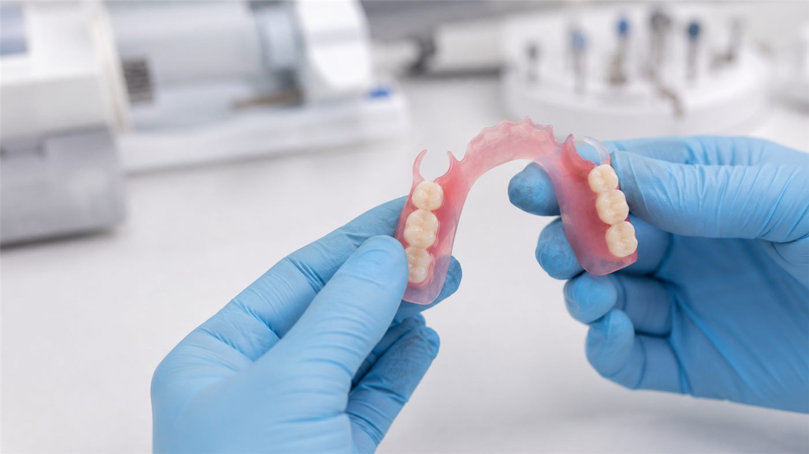

Pružné náhrady Flexite®
Naše klinika nově pořídila moderní injektážní přístroj, který nám umožňuje zhotovovat pružné zubní náhrady Flexite® z termoplastického nylonového polyamidu.

Stomatologické centrum · Mosty u Jablunkova
pěkný úsměv, lepší život.
Působí v Mostech u Jablunkova a nabízí komplexní stomatologickou péči v příjemném prostředí. Zaměřujeme se na prevenci, záchovnou i estetickou stomatologii a klademe důraz na individuální přístup ke každému pacientovi.

Náš tým tvoří zkušení zubní lékaři a dentální hygienistka, kteří se starají o zdravý a krásný úsměv. Součástí kliniky je i vlastní zubní laboratoř a moderní vybavení, včetně špičkového 3D rentgenu CBCT, který zajišťuje přesnou diagnostiku.

Pravidelné preventivní prohlídky jsou základem dlouhodobě zdravého chrupu.
02Dentální hygiena je nedílnou součástí péče o chrup a důležitým krokem v prevenci zubního kazu i onemocnění dásní.
03Zubní implantát představuje moderní možnost náhrady chybějícího zubu.
04Zubní protetika se zabývá obnovou poškozených zubů a náhradou zubů, které již není možné zachovat nebo v chrupu zcela chybí.
05U rozsáhlejších nebo složitějších stomatologických problémů je důležité nejprve správně určit možnosti další léčby.
Naše klinika nově pořídila moderní injektážní přístroj, který nám umožňuje zhotovovat pružné zubní náhrady Flexite® z termoplastického nylonového polyamidu.
